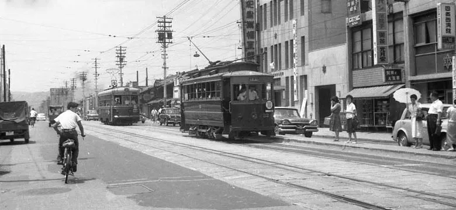
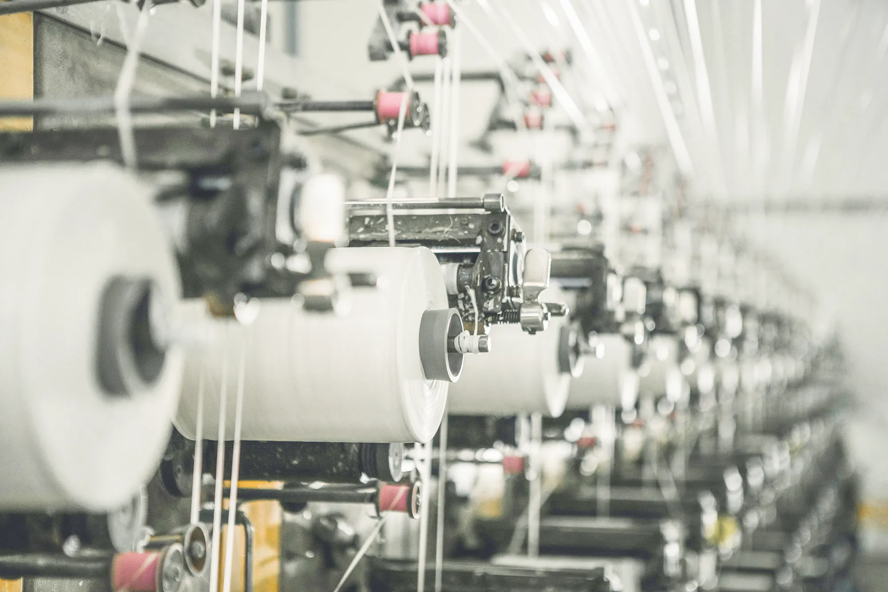
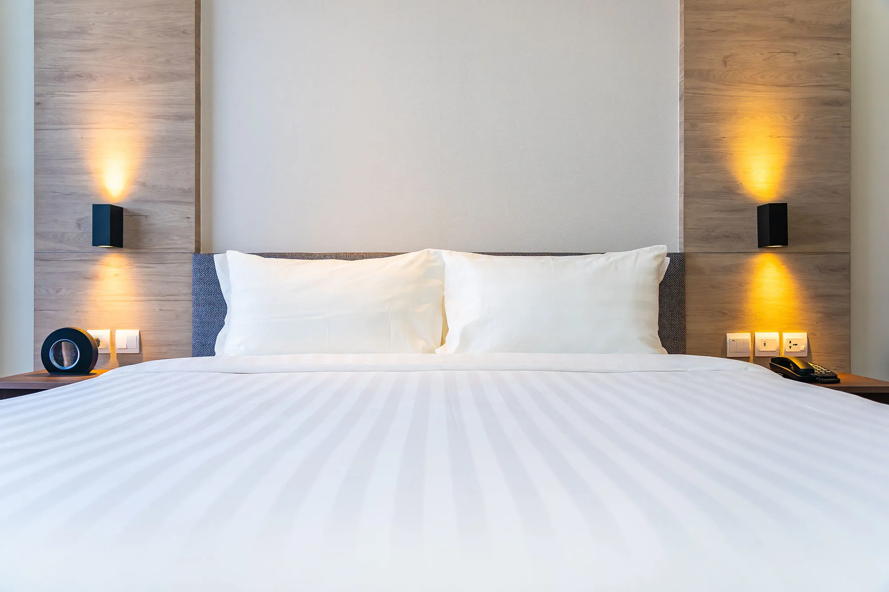
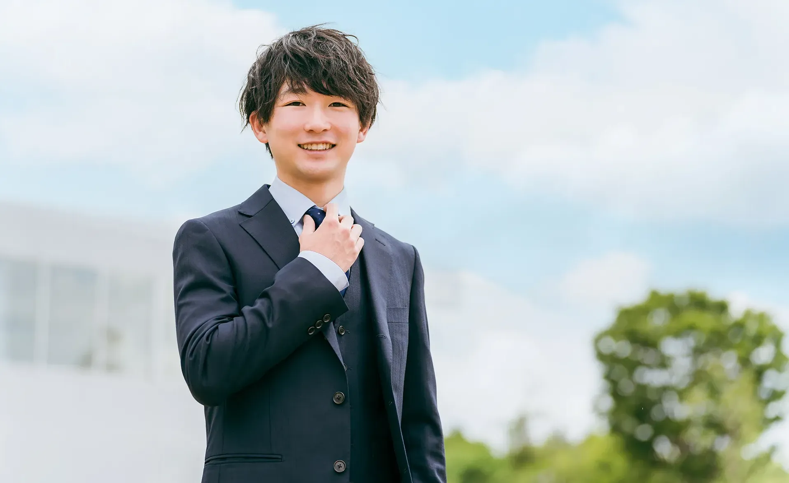

100年の歩み、
これからの未来へ。
株式会社ルナール
紡いできた一世紀

「綿宗ふとん店」として創業
京都府伏見にて創業。綿布団を中心とした寝具の製造・販売を開始。誠実なものづくりを第一に、長年受け継がれる品質の基礎を築く。

法人化と流通網の拡大
事業を法人化し、株式会社として設立。本社機能を大阪市へ移転するとともに、寝具専門店などを中心とした流通網を大きく拡充し、多様なニーズへの対応力を高める。

100周年、さらなる進化
創立100周年。伝統技術と最新テクノロジーを融合し、「ただ休息をとる」寝具から、「健康を実現する環境」への提供を目指し、より質の高い眠りを追求し続けています。
これからの100年。変わらぬこだわり
寝具素材・技術の追求
高品質なガーゼやダウンをはじめとする厳選素材を活かし、熟練の技術で快適さを追求しています。

柔軟な企画アイデア
時代とともに変化するライフスタイルを汲み取り、新しい睡眠環境のアイデアを提案し続けます。

「寝る道具」から、
「健康を実現する環境」へ。
創業以来、私たちはひたむきに「質の高い寝具」を追求してきました。
しかし、時代とともに人々のライフスタイルが変化する中、睡眠に求められる役割も「ただ休息をとる」ことから、「心身の健康を維持し、明日への活力を生み出す」ことへと大きく進化しています。
次の100年。
株式会社ルナールは、培ってきたモノづくりの矜持を胸に、最先端の知見を取り込みながら「健康で笑顔に満ちた社会」の実現に貢献し続けます。
妥協なきプロフェッショナルとして、新しい睡眠の未来へ向かって。